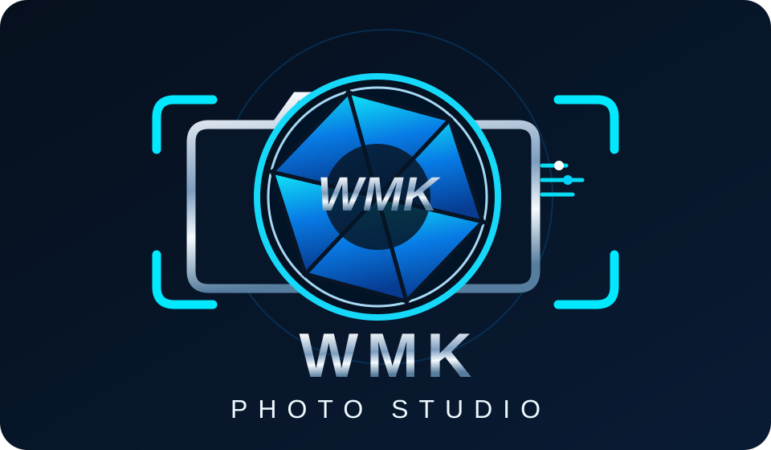

WMK Photo Studio
Roadmap de desenvolvimento
Atualizado em 15/11/2026Estado das melhorias do fork; publicação no código não equivale a validação do executável. Detalhes técnicos

Roadmap de desenvolvimento
Atualizado em 15/11/2026Estado das melhorias do fork; publicação no código não equivale a validação do executável. Detalhes técnicos